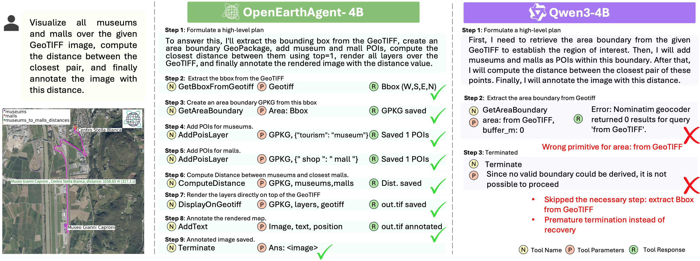
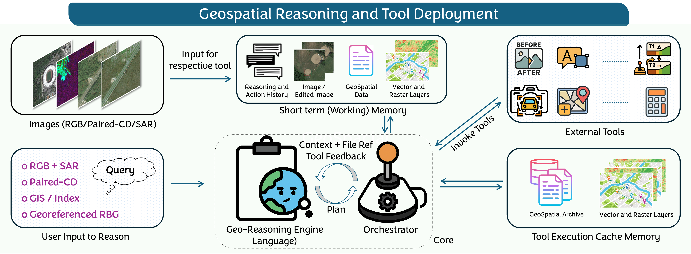
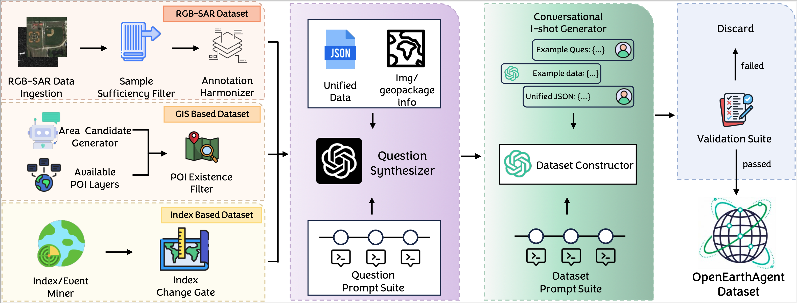

OpenEarthAgent is a tool-augmented geospatial reasoning framework designed for structured, multi-step analysis over satellite imagery, SAR data, GIS layers, and spectral indices. Unlike perception-only models, OpenEarthAgent performs executable reasoning by orchestrating perceptual, GIS, spectral, and GeoTIFF-based tools through a unified JSON tool interface.
The accompanying corpus contains 14,538 training and 1,169 evaluation instances with over 107K reasoning steps, spanning urban analysis, disaster assessment, environmental monitoring, transportation, and infrastructure tasks. The dataset integrates GIS operations and spectral computations including NDVI, NBR, and NDBI.


OpenEarthAgent decomposes geospatial tasks into multi-step reasoning trajectories. A unified tool registry standardizes perceptual, GIS, spectral, and raster operations. A central orchestrator validates tool calls, executes them, caches intermediate outputs, and maintains spatially grounded working memory.

The pipeline integrates optical, SAR, GIS, and multispectral sources into a unified JSON schema containing queries, multimodal inputs, and validated reasoning traces. Each trajectory undergoes deterministic replay to ensure geometric validity and tool correctness. Training is performed via supervised fine-tuning on multi-step tool trajectories with response-only masking.
@misc{shabbir2026openearthagent,
title={OpenEarthAgent: A Unified Framework for Tool-Augmented Geospatial Agents},
author={Akashah Shabbir and Muhammad Umer Sheikh and Muhammad Akhtar Munir and Hiyam Debary and Mustansar Fiaz and Muhammad Zaigham Zaheer and Paolo Fraccaro and Fahad Shahbaz Khan and Muhammad Haris Khan and Xiao Xiang Zhu and Salman Khan},
year={2026},
eprint={2602.17665},
archivePrefix={arXiv},
primaryClass={cs.CV},
url={https://arxiv.org/abs/2602.17665},
}